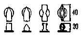

제품디자인산업기사 (2004-09-05 기출문제)
1과목: 제품디자인론
1. 다음 중 그린 디자인(Green Design)과 관계 없는 것은?
- 내구력 개선
- 사전 오염방지
- 체계적 공정관리
- 원자재 투입확대
(정답률: 알수없음)

2. 비대칭적 양식과 미술의 실용화를 주장하였으나, 사치스럽고 환상적이며 곡선적 과잉장식의 운동은?
- 아트앤드크라프트
- 아르누보
- 독일공작연맹
- 바우하우스
(정답률: 91%)
3. 미적 형식 원리인 율동(rhythm)에 관한 설명 중 틀린 것은?
- 각 부분이 동일하며 간격이 일정할 때는 리듬이 단조롭다.
- 간격이 기하급수학적으로 변하고 있으면 강한 리듬이 생긴다.
- 규칙적으로 변화하는 형이나 색을 대비라고 하며 일종의 리듬을 나타낸다.
- 너무 변화하면 리듬은 혼란되어 잃어버리기 쉽다.
(정답률: 알수없음)
4. 아르키메데스의 입체(archimedean Solids)에서 입방형 8면체(Cuboctahedron)의 면들은 어떤 기하형태들로 구성되었는가?
- 정3각형과 정4각형
- 정3각형과 정6각형
- 정4각형과 정5각형
- 정4각형과 정6각형
(정답률: 알수없음)
5. 과거의 합리적인 모랄(moral)에 대한 전적인 거절을 위해 1981년 밀라노에서 새로운 그룹의 기반을 조성하였으며, 역사적 디자인 모티브를 추출하여 재해석하거나 다양한 양식과 혼용, 복합적인 형태를 추구한 운동은?
- 멤피스(memphis)
- 포스트모더니즘(post-modernism)
- 아르누보(Art Nouveau)
- 합리주의(Rationalism)
(정답률: 알수없음)
6. 「기능을 개량함으로써 미는 생겨난다.」라는 근본이념을 추구하였고 산업디자인의 영역을 '입술 연지에서 기관차까지'라고 표현한 사람은?
- 헨리 반데 벨데(Henry van de velde)
- 레이몬드 로위(Raymond Loewy)
- 모서(K.Mosere)
- 월리엄 모리스(William Morris)
(정답률: 알수없음)
7. 물체의 표면상 특징을 시각을 통해서 느낄 수 있는 성질은?
- 텍스츄어
- 농담
- 매스
- 동세
(정답률: 91%)
8. 공업디자인에 있어 제품의 완성 예상도를 뜻하는 것은?
- 스타일 스켓치(style sketch)
- 렌더링(rendering)
- 모델링(modeling)
- 모크업(mock up)
(정답률: 알수없음)
9. 타인의 가치관 보다 자신의 가치를 우선하여 구매결정을 하는 생활유형(Life style)은?
- 내부지향적 소비유형
- 욕구지향적 소비유형
- 외부지향적 소비유형
- 모방지향적 소비유형
(정답률: 알수없음)
10. 다음 중 강한 효과를 줄 수 있는 것은?
- 화면중앙을 통과하는 대각선
- 화면하부의 수평선
- 화면상부의 수평선
- 화면중앙의 수직선
(정답률: 93%)
11. 루이스설리반이 주장한 기능주의 미학의 구호가 맞는 것은?
- 기능은 순리다.
- 형태는 기능을 따른다.
- 심미성은 곧 기능이다.
- 좋은 기능은 심미성을 창출한다.
(정답률: 알수없음)
12. 신제품 개발의 유형 중 '새로운 형태와 기능을 창조'하는 것은?
- 적응 디자인(adaptation design)
- 혁신 디자인(innovation design)
- 수정 디자인(modification design)
- 발명 디자인(invention design)
(정답률: 알수없음)
13. 정확한 마감처리, 광택이 있는 표면, 명확하고 장식이 배제된 재료의 직접적인 표현, 자유로움이 특징인 1930년대를 주도했던 조형 양식은?
- 아르데코 스타일
- 유선형 스타일
- 키치 스타일
- 유기적 모더니즘 스타일
(정답률: 알수없음)
14. 휴대용 손전등에 라디오의 기능을 복합시킨 제품의 아이디어 발상법은?
- 전환법
- 확대법
- 대체법
- 전도법
(정답률: 알수없음)
15. 유기적 건축이론을 주장한 20세기의 미국을 대표하는 기능주의 건축가는?
- 존러스킨
- 루이스설리반
- 프랭크로이드라이트
- 찰스레니맥킨토시
(정답률: 알수없음)
16. 아르누보 조형 운동의 대표적 인물은?
- 반 데 벨데(Van de Velde, Henry)
- 그로피우스(Gropius, Walter)
- 모리스(Morris, William)
- 빌(Bill, Max)
(정답률: 알수없음)
17. 디자인을 올바르게 설명한 것은?
- 정형화된 복제의 계획
- 아이디어를 중시한 평면적인 패턴
- 실용적, 미적 조형성을 계획한 가시적 표시
- 심미성을 강조한 주관적 관념의 조형적 계획
(정답률: 알수없음)
18. 다음 중 도구의 개념으로서 물건을 창조하는 디자인 분야는?
- 환경디자인
- 시각디자인
- 건축디자인
- 제품디자인
(정답률: 알수없음)
19. 제품 수명주기에서 수요의 지속 정도에 따른 유행 형태에 대한 설명 중 옳은 것은?
- 클래식(Classic)은 상당히 오랫동안 널리 고객에 의해 수용되는 유행으로, 미니스커트가 전형적 예이다.
- 플로프(Flop)는 수용기는 없이 도입기만으로 끝나는 유행을 말한다.
- 패드(Fad)는 도입기와 수용기는 있으나 쇠퇴기가 없어 수용지속기간이 긴 유행을 말한다.
- 포드(Ford)는 수용 정도는 높으나 지속 기간이 짧은 유행을 말한다.
(정답률: 알수없음)
20. 아트 앤드 크라프트 운동(Arts and Crafts Movement)은 누구에 의하여 실천되었는가?
- 사무엘 빙(Samuel Bing)
- 헤르만 무테지우스(Hermann Muthesius)
- 윌리엄 모리스(William Morris)
- 헨리 반데 벨데(Henry Van de Velde)
(정답률: 알수없음)
2과목: 인간공학
21. 삼색계에서 표준색이란 등량을 서로 섞으면(가색혼합)백색이 나오는 색들을 말한다. 이 기본색들을 바르게 나열한 것은?
- 적, 황, 녹
- 적, 황, 청
- 적, 청, 녹
- 적, 녹, 흑
(정답률: 알수없음)
22. 국지적인 근육의 동작강도를 측정하는 방법은?
- 근전도 계측
- 안정피로 계측
- 소음 계측
- 조도 계측
(정답률: 알수없음)
23. 인간공학이 본격적인 종합 학문으로서 대두되기 시작한 시기는?
- 산업혁명 이후
- 제1차 세계대전 이후
- 제2차 세계대전 이후
- 월남전 이후
(정답률: 알수없음)
24. 제어/반응비(control/response ratio)에 대한 설명 중 잘못된 것은?
- 표시장치에 있어서 지침이 움직이는 총량에 대한 제어장치 움직임의 총량을 뜻한다.
- 민감도와 같은 의미이다.
- 민감한 제어일수록 제어/반응비가 높다.
- 제어/반응비가 감소함에 따라 이동시간은 급격히 감소하다가 안정되며, 조정시간은 이와 반대의 형태를 갖는다.
(정답률: 34%)
25. 사람이 거주하는 방안에서의 탄산가스 농도는 몇 % 이하여야 하는가?
- 0.01 %
- 0.2 %
- 0.25 %
- 0.5 %
(정답률: 알수없음)
26. 색각 결핍자(색맹)들의 기능 결함 부위는?
- 원추체(cone)
- 간상체(node)
- 망막(retina)
- 홍체(iris)
(정답률: 알수없음)
27. 다음 표준형 키보드의 경사도 중 최적 유지의 각도는?
- 2° - 5°
- 7° - 10°
- 15° - 25°
- 30° - 35°
(정답률: 알수없음)
28. 동작범위(Range of Motion) 중 머리가 좌우로 회전되는 정상적(Normal) 동작범위는?
- 좌우 60°
- 좌우 120°
- 좌우 180°
- 좌우 360°
(정답률: 알수없음)
29. 다음 중 진전(tremor)이 가장 많이 나타나는 운동은?
- 전후운동
- 좌우운동
- 반복운동
- 수직운동
(정답률: 알수없음)
30. 다음 중 하위 백분위수를 기준으로 디자인해야 하는 것은?
- 문의 넓이
- 사다리의 강도
- 선반의 높이
- 탈출구
(정답률: 80%)
31. 눈의 조직 중 상(像)의 초점을 맞추는 곳은?
- 망막
- 동공
- 원추체
- 수정체
(정답률: 알수없음)
32. 다음의 그림은 손조작시의 형상에 의한 코딩(cording)을 나타낸 것이다. 이와 관련된 설명으로 옳은 것은?

- 1회전 이상의 연속제어용
- 1회전 미만의 연속제어용으로 방향무관
- 단계적 제어용으로 방향 중요
- 움직임을 주지않은 고정형
(정답률: 알수없음)
33. 다음 중 자동차나 비행기의 조종간을 설계할 때 가장 적절하게 응용되는 양립성은?
- 공간적 양립성(spatial compatibility)
- 운동 양립성(movement compatibility)
- 개념적 양립성(conceptual compatibility)
- 형식 양립성(modality compatibility)
(정답률: 알수없음)
34. 항공기의 설계시 비상 탈출구의 크기를 정할 때 인체 측정자료 중 어떤 것을 이용하는 것이 가장 타당한가?
- 남성의 제 5백분위수
- 여성의 제 5백분위수
- 남성의 제 50백분위수
- 남성의 제 95백분위수
(정답률: 알수없음)
35. 같은 중량의 경우 어떤 방법으로 짐을 나르는 에너지가 (산소소비량) 값은 수행방법에 따라 달라진다. 다음 중에 에너지가의 값이 가장 큰 것은?
- 배낭을 등에 진다.
- 양손으로 들고 간다.
- 쌀자루를 어깨에 맨다.
- 목도(나무)를 이용 어깨로 진다.
(정답률: 알수없음)
36. 피부감각 중 가장 감수성이 높은 것은?
- 압각
- 통각
- 냉각
- 온각
(정답률: 알수없음)
37. 인간의 청각을 고려한 신호 표현을 구상할 때 다음 중 틀린 것은?
- 지나치게 고강도의 신호를 피한다.
- 주변 소음 수준에 상대적인 세기로 설정한다.
- 청각으로 과부하 되지 않게 한다.
- 지속적인 신호로 인지할 수 있게 한다.
(정답률: 알수없음)
38. 오독율(誤讀率)이 가장 적은 계기의 모양은?
- 수직형
- 수평형
- 반원형
- 개창형
(정답률: 알수없음)
39. 다음 중 인간공학적 사고와 가장 관련이 먼 것은?
- 인간의 특성에 알맞는 기계나 도구의 설계
- 인간과 기계와의 사이에 합리성 유지
- 인간의 적성과 훈련의 문제
- 작업설계시 인간 중심의 수작업화 설계
(정답률: 알수없음)
40. 소음(음향)의 강도를 측정하기 위한 단위로 맞는 것은?
- Lux
- fc
- dB
- Hz
(정답률: 알수없음)
3과목: 공업재료 및 모형제작론
41. 다음 중 포장용지로서 가장 대표적인 것은?
- 본드지(bond paper)
- 크라프트지(kraft paper)
- 아트지(art paper)
- 그라비아용지(gravure paper)
(정답률: 알수없음)
42. 인쇄잉크가 나타내는 유동성의 크기는?
- 연신율
- 탄성계수
- 점도
- 인성
(정답률: 75%)
43. 다음 중에서 러프 목업(rough mock-up)제작시 가장 손쉬운 재료는?
- 종이
- 목재
- 유리
- 금속
(정답률: 알수없음)
44. 사투상도에서 경사축의 경사각으로 보통 쓰이지 않는 각은?
- 15°
- 30°
- 45°
- 60°
(정답률: 알수없음)
45. 럼버코어(Lumber Core)의 특징을 바르게 설명한 것은?
- 크래프트지에 요소수지를 침윤시킨 샌드위치 구조판이다.
- 보통 합판의 표면에 슬라이스드 베니어를 올려 붙인 것이다.
- 목판을 작은 각재 단면으로 이어 붙여 첨심판을 앞뒤로 붙인 것이다.
- 압형에 모양을 조각하여 가열 로울러 사이에 합판을 통하게 하여 눌러 찍은 것이다.
(정답률: 알수없음)
46. 사출성형의 특징이 아닌 것은?
- 살두께 최소 0.⑤m/m도 성형이 가능하다.
- 고속, 대량, 자동화 생산이 가능하다.
- 아름다운 외관을 만들 수 있다.
- 원료의 낭비와 마무리 손질이 극히 적다.
(정답률: 알수없음)
47. 실의 단위에서 번수는 굵기를 나타내는 것인데, 면사·마사와 같이 짧은 방적사에 사용하는 표시법은?
- 항원식
- 항중식
- 항장식
- 항상식
(정답률: 알수없음)
48. 맑고 투명한 유리 화병을 제조할 때 용융유리의 기포를 제거하기 위한 청정제로 사용되는 부재료는?
- 염화나트륨
- 질산나트륨
- 황산카드뮴
- 황산나트륨
(정답률: 알수없음)
49. 금속모형제작에 필요한 관굽힘 작업 방법 중 맞는 것은?
- 가볍고 가는 관에는 스프링을 사용하고, 두꺼운 관에는 쇠구슬을 사용한다.
- 형에 홈을 내어 관과의 접촉을 많게 하면 안된다.
- 송지나 납을 넣고는 구부릴 수 없다.
- 모래를 관속에 넣을 때는 틈새를 많이 주어 상온에서 구부린다.
(정답률: 알수없음)
50. 접착면을 일정한 각도로 유지시키면서 강하게 조여주는 역할을 하는 작업도구는?
- 바이스
- 크램프
- 바이스 프라이어
- 선반
(정답률: 알수없음)
51. 양극 산화법으로서 다양한 착색과 발색을 얻는 아노다이징법에 사용되는 주재료는?
- 알루미늄
- 플라스틱
- 게르마늄
- 마그네슘
(정답률: 59%)
52. 점토제품 중 소성온도가 가장 낮은 것은?
- 도기
- 토기
- 석기
- 자기
(정답률: 알수없음)
53. 다음 멜라민수지(Melamine resin)의 설명 중 맞는 것은?
- 불투명하여 착상이 좋고, 내수성이 우수하다.
- 도료의 밀착성을 좋게 하기 위하여 알키드 수지로 변성시켜 사용한다.
- 질이 견고하고 강도가 크나, 내마모성이 약하다.
- 항공기, 선박, 차량 등의 구조재나 건축의 루버(Louver)에 사용한다.
(정답률: 알수없음)
54. 렌더링시 윤곽선 기입에 관한 내용 중 적당하지 않은 것은?
- 눈에 가까운 것은 가늘게 하고, 멀어질수록 굵게 한다.
- 어두운 곳은 부드럽게, 밝은 곳은 날카롭게 한다.
- R(radius)부는 한가운데를 분명히 하도록 처리한다.
- R(radius)부와 직선이 맞닿은 부분은 약하고 부드럽게 연결하거나 약간 떨어지게 하여 표현한다.
(정답률: 알수없음)
55. 다음 모형 중 가장 전문적인 기술을 요하는 모형은?
- 스터디 모형(study model)
- 어피어런스 모형(Appearance Model)
- 프로토타입 모형(Prototype Model)
- 더미 모형(dummy model)
(정답률: 70%)
56. 렌더링의 배경처리에 관한 설명 중 틀린 것은?
- 제품의 성격을 잘 나타낼 수 있다.
- 표현기법에 따라서 쉽게 처리해도 된다.
- 디자이너의 컨셉을 강하게 표현할 수 있다.
- 제품디자인 개념을 이해하는데 혼란을 가져온다.
(정답률: 알수없음)
57. 도료의 용제가 갖추어야 할 성질이 아닌 것은?
- 은폐성
- 용해성
- 휘발성
- 위생성
(정답률: 알수없음)
58. 금속의 표면이나 비금속 표면에 다른 금속을 사용하여 피막을 만드는 처리방법은?
- 도금
- 화성처리
- 라이닝
- 도장
(정답률: 알수없음)
59. 다음 중 농담효과를 풍부하게 얻을 수 있기 때문에 사진인쇄에 가장 적합한 것은?
- 그라비어 인쇄
- 실크 스크린
- 플록 인쇄
- 활판 인쇄
(정답률: 알수없음)
60. 구리 95%와 아연 5%를 함유한 합금으로 화폐나 메달에 사용되는 구리합금은?
- 톰백(Tombac)
- 커머셜 브론즈(Commercial bronze)
- 길딩 메탈(Gilding metal)
- 로우 브라스(low brass)
(정답률: 알수없음)
4과목: 색채학
61. 다음 중 먼셀(Munsell)의 기본 5원색은?
- R, Y, G, B, P
- R, O, Y, B, P
- R, Y, B, C, P
- PB, YR, GY, BG, RP
(정답률: 알수없음)
62. 기업색채의 계획방법에 관한 설명 중 가장 올바른 것은?
- 눈에 잘 띄고 독특한 색으로만 계획하여야 한다.
- 기업체에 관련된 사람들이 좋아하는 색으로 계획한다.
- 기업과 상품 이미지, 기호 이미지가 통합된 이미지를 나타내어야 한다.
- 동색 계열의 색채로 계획하여야 한다.
(정답률: 알수없음)
63. 문.스펜서 색채조화론의 균형점에서 색상 YR, 채도가 5보다 클 때 심리적 효과는?
- 자극적, 서늘함
- 안정감, 온도감
- 안정감, 중성감
- 자극적, 따뜻함
(정답률: 알수없음)
64. 무채색에 대한 설명 중 옳은 것은?
- 주로 어두운 색을 말한다.
- 탁한 색을 말한다.
- 유채색 중에서 어두운 색을 말한다.
- 색상과 채도는 없고 명도만 있다.
(정답률: 알수없음)
65. 다음 중 선명한 빨강의 감성에 적합한 것은?
- 따뜻하게 느껴진다.
- 차분하다.
- 후퇴되어 보인다.
- 가볍게 느껴진다.
(정답률: 알수없음)
66. 색의 3속성에 대한 설명으로 옳지 않은 것은?
- 색의 3속성에는 색상(hue), 명도(value), 채도(chroma)가 있다.
- 감각으로 구별되는 색의 속성을 색상이라고 한다.
- 색의 밝음의 감각을 척도화한 것을 명도라고 한다.
- 채도가 0일 때 가장 순수한 색이 된다.
(정답률: 알수없음)
67. 보색대비의 효과를 주기에 가장 적절한 배색은?
- 빨강-초록
- 빨강-노랑
- 빨강-검정
- 빨강-보라
(정답률: 알수없음)
68. 무채색의 명도단계를 축으로 하여 색상, 명도, 채도를 단계적으로 배열한 기구는?
- 색상환 도표
- 동일색상면 도표
- 명도 및 채도 단계 도표
- 색입체
(정답률: 50%)
69. 난색에 관한 설명 중 옳은 것은?
- 대체로 진출색과 일치한다.
- 같은 정도의 색조일 때 한색보다 자극이 약하다.
- 한색보다는 사람에게 친근감을 덜 준다.
- 한색보다 사람을 차분하게 하는 효과가 있다.
(정답률: 알수없음)
70. 헤링(E.Hering)의 반대색설에 관한 설명 중 잘못된 것은?
- 혼색과 색각이상을 잘 설명할 수 있다.
- 4원색과 무채색광을 가정하고 있다.
- 이화작용, 동화작용으로 설명할 수 있다.
- 분해, 합성이 동시에 일어날 때 그 정도에 따라 회색의 감각이 생긴다.
(정답률: 50%)
71. 다음 중 유채색과 무채색의 배색 효과는?
- 경쾌하고 강한 대립
- 침착하고 정적
- 온화한 느낌
- 무겁고 침착
(정답률: 알수없음)
72. 색채조절의 일반적인 효과와 거리가 먼 것은?
- 눈의 피로와 긴장이 감소된다.
- 사고나 재해를 감소시킨다.
- 능률이 향상되어 생산력이 높아진다.
- 쾌적한 온도를 유지할 수 있다.
(정답률: 알수없음)
73. 다음 중 우울, 무기력을 연상시키는 색은?
- 흰색
- 회색
- 청색
- 자주색
(정답률: 70%)
74. 서로 다른 두 색이 서로의 영향으로 밝은 색은 더 밝게, 어두운 색은 더 어둡게 나타나는 대비 현상은?
- 명도대비
- 색상대비
- 채도대비
- 연변대비
(정답률: 알수없음)
75. 밝은 곳에서 어두운 곳으로 갑자기 들어갔을 때 시간이 조금 지난 후에야 주위의 물체를 식별할 수 있는 것을 무엇이라고 하는가?
- 명순응
- 색순응
- 암순응
- 무채순응
(정답률: 알수없음)
76. 오스트발트 표색계의 설명으로 틀린 것은?
- 백색량(W) + 흑색량(B) + 순색량(C) = 100% 이다.
- 무채색일 경우 W + B = 100% 가 된다.
- 완전 백색, 완전 흑색, 순색을 각각 꼭지점으로 하는 정3각형을 구성한다.
- 기본 8 색상을 각각 4 색상으로 세분하여 32색상으로 이루어져 있다.
(정답률: 알수없음)
77. 색채환경 분석에서 경쟁업체의 관용색채 분석 대상으로 비교적 거리가 먼 것은?
- 기업색
- 상품색
- 포장색
- 기호색
(정답률: 46%)
78. 다음 색채에 관한 설명 중 틀린 것은?
- 사과는 빨간색, 바나나는 노랑색이라고 구체적 대상과 관련하여 기억하는 색을 기억색이라 한다.
- 황색은 시감도가 높은 색이다.
- 고명도의 색채는 가볍게 느껴진다.
- 중명도 이하의 채도가 높은 색채는 부드러운 느낌을 준다.
(정답률: 37%)
79. 다음 명도에 관한 설명 중 잘못된 것은?
- 순색에 검정을 혼합하면 암색(暗色)이 된다.
- 순색에 흰색을 혼합하면 명색(明色)이 된다.
- 모든 순색은 명도가 서로 같고 무채색에서만 명도차이가 있다.
- 무채색의 명도 단계표(value scale)는 명도 판단의 기준이 된다.
(정답률: 알수없음)
80. 다음 색의 진출, 후퇴의 일반적인 성질 중 틀린 것은?
- 배경색과의 명도차가 큰 밝은 색은 진출되어 보인다.
- 채도가 낮은 배경색에 대한 높은 채도의 색은 진출되어 보인다.
- 난색계는 한색계보다 진출되어 보인다.
- 배경색의 채도가 높은 것에 대한 낮은 색은 진출되어 보인다.
(정답률: 알수없음)